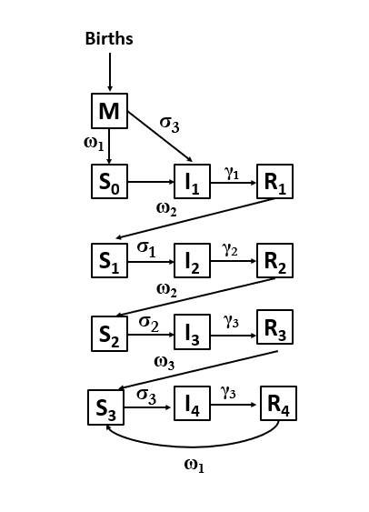

R.Scenario.Vax is an R package designed to provide Scenario projections for RSV hospitalizations in the context of new Vaccines and immunizations.
Installation
You can install the development version of R.Scenario.Vax from GitHub with:
# install.packages("remotes")
remotes::install_github("chelsea-hansen/R.Scenario.Vax")Model Structure

If no protection is given through immunizations, infants are born into the “M0” compartment with partial protection against infection. As this protection wanes, they transition to the “S0” compartment until they experience their first infection, “I1”.
After they recover from their first infection, they have a short period of sterilizing immunity, “R1”. When this immunity wanes, they are susceptible again, “S1”, but with lower risk of infection.
After each subsequent infection individuals are less infectious, recover more quickly, have a longer duration of immunity and a lower risk of future infections.
A proportion of individuals who become infected will require hospitalizatio (compartments not shown). The risk of hospitalization is based on both age and number of previous infections.
Infant Immunizations
Infants born to vaccinated persons start in the “Mv1” compartment. These infants have the same protection against infection as the infants in the “M” compartment but have additional protection against hospitalization given infection.
After the protection against infection wanes, infants continue to have protection against hospitalization given infection, “Mv2”. After this protection wanes they no longer have any protection and move to the “Si” compartment.
Some infants receive a dose of monoclonal antibodies at or shortly after birth, “Mn1”. These infants have the same protection against infection as the infants in the “M” compartment but have additional protection against hospitalization given infection.
After the protection against infection wanes, they continue to have protection against hospitalization given infection, “Mn2”. After this protection wanes they no longer have any protection and move to the “Si” compartment.
Some infants receive a catch-up dose of monoclonal antibodies before the RSV season. which confers protection against hospitalization but not protection against infection. These infants move from “S0” to “N1” and then to “N2”. Infants spend the same length of time in “N1” and “N2” and the level of protection is the same. After this protection wanes they no longer have any protection and move to the “Si” compartment.
Vaccination for Older Adults
Adults over 60 who receive a vaccine have a similar risk of infection as adults in the “S3” compartment, but have some protection against hospitalization given infection. Upon vaccination adults move to the “Vs1” compartment and then the “Vs2” compartment. They spend the same amount of time in each of these compartments and the protection is the same. After this protection wanes they no longer have any protection against hospitalization and return to the “S3” compartment.
Fixed Model Parameters
| Parameter | Value |
|---|---|
| 1Duration of infectiousness - first infection (1/γ1) | 10 days |
| 1Duration of infectiousness - second infection (1/γ2) | 7 days |
| 1Duration of infectiousness - third or later infection (1/γ3) | 5 days |
| 2Relative risk of infection following first infection (σ1) | 0.89 |
| 2Relative risk of infection following second infection (σ2) | 0.72 |
| 2Relative risk of infection following third or later infection (σ3) | 0.24 |
| Relative risk of infection with maternal immunity (same as RR following third infection) (σ3) | 0.24 |
| 1Duration of maternal immunity (1/ω1) | 90 days |
| 3Duration of immunity following first and second infections (1/ω2) | 182.625 days |
| 2Duration of immunity following third or later infections (1/ω3) | 358.9 days |
| 1Relative infectiousness - second infections (ρ1) | 0.75 |
| 1Relative infectiousness - third or later infections (ρ2) | 0.51 |
| Baseline transmission rate (β) | Fitted |
| Amplitude of seasonal forcing (b1) | Fitted |
| Phase of seasonal forcing (φ) | Fitted |
| Infections that lead to reported hospitalizations (<2m, 2-11 months fixed relative to this) | Fitted |
| Infections that lead to reported hospitalizations (1-4 yrs) | Fitted |
| Infections that lead to reported hospitalizations (5-64 yrs) | Fitted |
| Infections that lead to reported hospitalizations (65-74 yrs) | Fitted |
| Infections that lead to reported hospitalizations (75+ yrs) | Fitted |
| Nirsevimab effectiveness | 80% |
| maternal vaccination effectiveness | 57% |
| Duration of infant immunizations 2*(1/ωi) | 180 days |
| Vaccine effectiveness in older adults | 75% |
| Duration of vaccine effectiveness in older adults 2*(1/ωv) | 2 years |
References: 1. Pitzer et al.; 2. Hodgson et al.; 3. Ohuma et al.
Sample Data
The package includes 2 built-in data sets based on data from RSV-Net RSV-Net.
timeseries: Weekly time series of RSV hospitalizations in 7 states (all ages)age_distribution: The proportion of RSV hospitalizations in each age group and state (based on the 2018-19 and 2019-20 seasons only)
Notes: * RSV-Net data is only included for the 7 states which began reporting to RSV-Net in 2016.
RSV-Net provides data on RSV hospitalization rates. We have converted these to an approximate number of hospitalizations for use in the model.
RSV-Net did not include data for children until 2018. Simulated data for children has been added based on the weekly average RSV hospitalization rate during the 2018-19 and 2019-20 RSV seasons.
Data have been inflated to adjust for changes in RSV testing and reporting during the COVID-19 pandemic.

Example
Here we will walk through an example using data from New York state.
Step 1: Retrieve starting values and fixed parameters
The model requires data on birth rates, net migration rates, and the age-specific population distribution. The get_data() function will pull the necessary data using the tidycensus R package for the year 2022 (most recent available data). The annual birth rate is converted to a weekly number of births and is used to introduce new individuals into the <2m age class. The model assumes that individuals age exponentially into the next age class with the rate of aging equal to the inverse of the time spent in each age class. The net migration rate is applied uniformly across age classes. The model uses an expanded version of the contact matrix described by Mossong et al. 2008 to define contacts between age classes.
The get_data() function will retrieve the fixed parameter values as well as the population data needed to run the model. This function returns a list with 3 values. 1. Fixed parameters 2. Initial values for model compartments 3. Vectorized version of the initial values for model compartments
library(R.Scenario.Vax)
ny_data = get_data(state_or_county="state",state_abbr="NY",county_name=NULL)
fixed_parameters = ny_data[[1]]
yinit = ny_data[[2]]
yinit.vector = ny_data[[3]]Step 2: Fit model to data
the fit_model() function will fit model parameters using maximum likelihood estimation. The model will fit 7 parameters in total. But first we will extract the data for New York from the sample data sets. We also only want to fit to data before the COVID-19 pandemic. The function will produce a figure when the fitting is complete showing the fit to the timeseries and age_distribution data sets.
timeseries_ny = timeseries %>% filter(state=="New York",date<'2020-04-01')
age_distribution_ny = age_distribution %>% filter(state=="New York")
fitNY = fit_model(time_series = timeseries_ny$value, #Make sure this value is a vector of whole numbers
age_dist = age_distribution_ny$proportion, #Make sure this value is a vector
parmset = fixed_parameters,
yinit = yinit,
yinit.vector = yinit.vector)
Common errors
If the time series values are not whole numbers or the values given to the time_series and age_dist arguments are not vectors, you will receive an error message. Please see examples below.
error1 = fit_model(time_series = timeseries_ny$value*1.1, #NOT WHOLE NUMBERS
age_dist = age_distribution_ny$proportion,
parmset = fixed_parameters,
yinit = yinit,
yinit.vector = yinit.vector)
#> Error in optim(par = c(-0.5, -2, 2, -2, -4, -8, -5, -5), fn = fitmodel, : function cannot be evaluated at initial parameters
error2 = fit_model(time_series = timeseries_ny, #NOT A VECTOR
age_dist = age_distribution_ny$proportion,
parmset = fixed_parameters,
yinit = yinit,
yinit.vector = yinit.vector)
#> Error in dpois(x = time_series, lambda = H, log = TRUE): Non-numeric argument to mathematical function
error3 = fit_model(time_series = timeseries_ny$value,
age_dist = age_distribution_ny, #NOT A VECTOR
parmset = fixed_parameters,
yinit = yinit,
yinit.vector = yinit.vector)
#> Error in dmultinom(x = age_dist2, prob = age_dist, log = TRUE): x[] and prob[] must be equal length vectors.Step 3: Scenario Projections
Once you have the fitted parameters, use the scenario_projection() function to run scenario projections for the number of RSV hospitalizations based on the number of immunizations administered. We are only running one example here, but you can run many scenarios. If you would like to use the Shiny App to display your results, please make sure to run a counterfactual scenario and name it “Counterfactual” and projection_intervals = TRUE.
scenarioA = scenario_projection(fitted_parms = fitNY,
parmset = fixed_parameters,
yinit=yinit,
yinit.vector=yinit.vector,
data_start = '2016-10-08',
projection_start = '2024-10-01',
projection_end = '2025-06-01',
adult_start = '2024-08-01',
adult_end = '2025-05-01',
adult75_doses = 400000,
adult75_doses_last_year = 750000,
adult65_74_doses = 100000,
adult65_74_doses_last_year = 250000,
maternal_start = '2024-09-01',
maternal_end = '2025-01-31',
maternal_doses = 50000,
monoclonal_catchup_start = '2024-10-01',
monoclonal_catchup_end = '2025-03-01',
monoclonal_catchup_doses = 75000,
monoclonal_birth_start = '2024-10-01',
monoclonal_birth_end = '2025-03-01',
monoclonal_birth_doses = 75000,
scenario_name="Scenario A",
projection_intervals=TRUE
)
Step 4: Launch Shiny App
Once you have run several scenarios (including a “Counterfactual”), combine all scenarios using rbind() or bind_rows() and save as a .rds file. Launch the Shiny App using the code below. The Shiny App will ask you to upload the saved results.